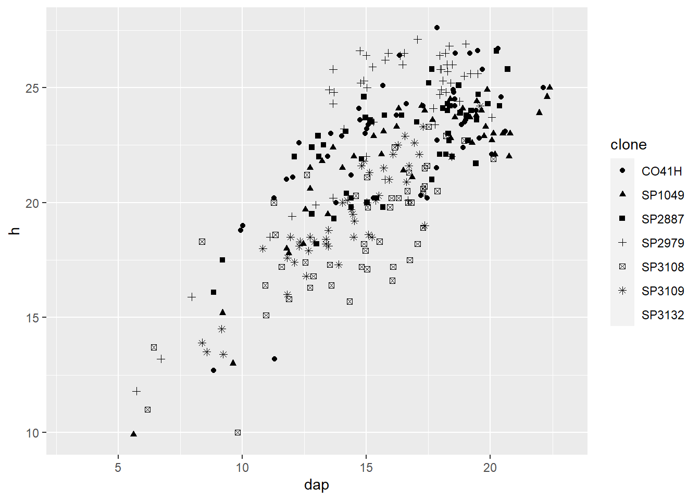

Visualização
O ggplot2é o pacote mais utilizado para criação de gráficos no R. Ele implementa a Gramática dos Gráficos proposta por Leland Wilkinson em seu livro The Grammar of Graphics. A ideia é que há uma gramática racional e computacional para a composição de gráficos estatísticos. Ao controlar a gramática, você pode gerar um grande conjunto de gráficos cuidadosamente construídos a partir de um conjunto relativamente pequeno de operações.
Existem muitos materiais e cursos sobre como criar gráficos com o ggplot2. Basta um simples google sobre o assunto ou problema que você tem e rapidamente vai aparecer uma pergunta semelhante e várias respostas assunto. Como padrão, a documentação do pacote pode ser consultada, bem como diversos livros sobre o assunto. Recomendo o site do pacotes ggplot2 e o livro do autor
Conceitos básicos
Existem alguns conceitos básicos em torno desde universo de gráficos. Em primeiro lugar, os gráficos são construídos em camadas (layers). Cada componente do gráfico, a partir dos dados fornecidos, está amarrado ao sistema de coordenadas e este por sua vez, está condicionado aos resumos estatísticos, rótulos e escalas. Portanto, gráficos expressos são construídos com poucos comandos, mas com definições padrões. Para criar gráficos personalizados e de maior qualidade é preciso adicionar algumas funções… mas fique tranquilo, dificilmente vai passar de 7 camadas.
As propriedades gráficas que codificam os dados são dimensões tratadas como aesthetic no ggplot2, destacando:
- x
- y
- size
- shape
- color
- fill
Os elementos gráficos são as geometrias, como:
- point
- line
- segment
- bar/col
- text
- area
- hitogram
- density
Você também vai querer adicionar estatísticas que resumem seus dados, e o pacote possibilita algumas delas:
- smooth
- mean/median
- function
As dimensões (aesthetic), geometrias e resumos estatísticos constituem as mais importantes camadas de gráfico, mas há uma série de outras características que você vai querer ajustar. As mais comuns são:
- Eixo x ou y em escala logarítmica
- Paletas de cores personalizadas
- Formas de pontos personalizado, ou tipos de linha
As seções seguintes são dedicadas a alguns destes elementos básicos ggplot2.
Layers
Iremos criar gráficos em camadas. A estratificação de elementos é talvez o aspecto mais poderoso do ggplot2. Isso significa que gráficos relativamente complexos são construídos com pequenas peças, que você pode adicionar ou remover de forma iterativa.
Os dados
O primeiro argumento da função ggplot() é um data.frame, e seu segundo argumento é aes(). Você nunca vai usar aes() em qualquer outro contexto, exceto dentro de outras funções do ggplot2, por isso talvez seja melhor não pensar em aes() como função individual, mas sim como uma forma especial de definir as dimensões dos gráficos.
library(tidyverse)
library(readxl)
tab_inv <- read_excel("input/TC5005_2017.xlsx")
ggplot(tab_inv, aes(x = dap, y = h))Veja que os dados e as dimensões dos dados já foram informados, entretanto não nada no gráfico criado por não temos uma geometria definida.
Cada layer tem uma base de dados. Você pode indicar os dados na função principal ggplot() ou nos layers específicos. O mesmo ocorre para a definição das dimensões com a função aes().
A camada de geometria
O passo seguinte, depois de definir os dados e as dimensões, é adicionar a geometrias. Iremos discutir geometrias em mais detalhe abaixo, mas por agora, vamos adicionar a mais simples de todas: os pontos.
## Warning: Removed 1783 rows containing missing
## values (`geom_point()`).
Cada camada é feita por uma função. Algumas não precisarão de argumentos pois será utilizado o default. No exemplo anterior, fizemos um gráfico e adicionamos a camada de ponto geom_point(), por padrão, serão mostrados pontos pretos e sólidos de tamanho 1.
Caso você queira alterar o formato do ponto, basta especificar no argumento indicado.
## Warning: Removed 1783 rows containing missing
## values (`geom_point()`).Ou, se quiséssemos usar pontos vermelhos e maiores, poderíamos definir:
## Warning: Removed 1783 rows containing missing
## values (`geom_point()`).Como padrão, o ggplot2 cria um fundo cinza e linhas de grades brancas. Tem uma explicação plausível para isso e na maioria das vezes é bem útil, mas de forma geral não estamos acostumados a esse tema e isso pode incomodar. Mas fique tranquilo, isso é perfeitamente ajustável, vamos ver a seguir como fazê-lo.
Outro padrão é o nome dos eixos. Ele é correspondente à variável indicada, mas também pode ser alterado utilizando a função labs.
Finalmente, note que nós não precisamos dizer em geom_point() quais são as dimensões do gráfico. Já fizemos isso na função principal. Os layer herdam essas definições da função principal e por isso não precisamos ficar redefinindo a todo momento.
A camada de estatísticas
Adicionar uma linha de tendência uma suavização é muito simples, veja o exemplo.
## `geom_smooth()` using formula = 'y ~
## x'## Warning: Removed 1783 rows containing
## non-finite values (`stat_smooth()`).Nesse gráfico, foi ajustado uma regressão linear com um intervalo de confiança de 95%.
Uma coisa importante a entender é que não é necessário incluir os pontos, podemos apresentar somente a linha de tendência.
## `geom_smooth()` using formula = 'y ~
## x'## Warning: Removed 1783 rows containing
## non-finite values (`stat_smooth()`).## Warning: Removed 1783 rows containing missing
## values (`geom_point()`).Edições de eixos
Podemos alterar o nome dos eixos e ainda adicionar título, subtítulo e fonte ao gráfico.
ggplot(tab_inv, aes(x = dap, y = h)) +
geom_point(alpha = 0.5) +
labs(
title = "Experimento TC5005",
subtitle = "Fazenda Penha",
caption = "Suzano SA",
x = "CAP (cm)",
y = "Altura (m)"
) +
theme_bw()## Warning: Removed 1783 rows containing missing
## values (`geom_point()`).Aesthetics
No ggplot2, aesthetic são os elementos gráficos que representam as dimensões dos dados, e que são definidos com aes(). Em certa medida, a dimensão que você precisa para definir depende das geometrias que você deseja utilizar. Por exemplo, segmentos de linha tem propriedades geométricas diferentes de pontos. Mas de maneira geral, essa padronização não é problemática.
- x: localização do eixo-X.
- y: localização do eixo y.
- color: A cor das linhas, pontos, e as fronteiras externas das geometrias (polígonos, barras, etc.).
- fill : A cor de preenchimento das geometrias.
- size: O tamanho dos pontos.
- shape: Específico para pontos, define a forma dele.
- linetype: Específico para linhas, define o tipo de linha, caminho, ou borda de uma geometria.
- alpha: Isto define a opacidade de qualquer propriedade geométrica. É mais utilizada quando temos sobreposição de pontos ou linhas e queremos enxergar o que está por de trás.
- xend, yend: Você vai usá-los raramente, quando criar um segmento de linha, ou seta. O início do segmento de linha será localizado o x e y, e a extremidade do segmento de linha será definida em xend, yend.
Se aplicarmos a dimensão de cor em função da variável Cod, vamos notar que o ggplot2 entendeu que se trata de números e por isso adicionou uma escala contínua de cor na legenda. Não está certo, mas é o default.
## Warning: Removed 1783 rows containing missing
## values (`geom_point()`).O ggplot2 gerou automaticamente uma paleta de cores para os dados e criou uma legenda. Tal como acontece com tudo, a paleta de cores também é ajustável, o que será discutido em mais detalhe abaixo. O padrão de cores do ggplot2 é bastante inteligente. Cada cor é equidistante em torno de um círculo de cor HSL, e têm igual luminância. A ideia é que nenhuma categoria tenha maior destaque que outra, em contrapartida ela pode ser um problema para leitores daltônicos.
## Warning: Removed 1783 rows containing missing
## values (`geom_point()`).Neste momento você pode notar a diferença de indicar a cor fora do aes() não gera legenda e se aplica a todos os pontos. Quando a cor representa uma dimensão dos nossos dados, seja uma escala discreta ou contínua, ela deve ser indicada dentro da função aes() em conjunto com a variável que definirá a dimensão.
Grupos
Vamos criar um gráfico com uma linha de tendência por ano. O parâmetro se = FALSE é para retirar o intervalo de confiança da linha de tendência e facilita a visualização.
ggplot(tab_inv, aes(x = dap, y = h, color = clone)) +
geom_point() +
geom_smooth(method = "lm", se = FALSE)## `geom_smooth()` using formula = 'y ~
## x'## Warning: Removed 1783 rows containing
## non-finite values (`stat_smooth()`).## Warning: Removed 1783 rows containing missing
## values (`geom_point()`).Como a dimensão cor foi definida na função principal, todos layers herdaram essa informação. Mas e se quisermos um gráfico com pontos coloridos, mas só uma linha de tendência? Simples, vamos dar a dimensão de cor somente para o layer de pontos.
## `geom_smooth()` using formula = 'y ~
## x'## Warning: Removed 1783 rows containing
## non-finite values (`stat_smooth()`).## Warning: Removed 1783 rows containing missing
## values (`geom_point()`).É importante lembrar que não é só a dimensão de cor que gera sub-agrupamentos no gráfico. Se utilizarmos a forma para diferenciar a variável, essa definição também será herdade nos layers subsequentes.
## Warning: The shape palette can deal with a
## maximum of 6 discrete values because
## more than 6 becomes difficult to
## discriminate
## ℹ you have requested 7 values.
## Consider specifying shapes manually
## if you need that many have them.## Warning: Removed 1832 rows containing missing
## values (`geom_point()`).
A criação de gráficos com cores é uma atividade comum em muitas situações. Podemos definir se um gráfico será colorido de duas formas, o preenchimento interno da geometria ou a linha externa. Para o primeiro, utilizamos o argumento fill = <variável>e para o segundo color = <variável>. Note que as variáveis podem ser contínuas ou discretas para ambos os casos.
tab_resumo_clone <- tab_inv %>%
group_by(clone) %>%
summarise(
h = mean(h, na.rm = TRUE),
dap = mean(dap, na.rm = TRUE),
n_arv = n(),
n_falha = sum(if_else(cod1 == 1, 1, 0), na.rm = TRUE),
p_falha = (n_falha / n_arv) * 100
)
ggplot(tab_resumo_clone, aes(dap, clone)) +
geom_col()Se quisermos colorir as barras, o primeiro instinto seria provavelmente para definir color = Esp. Mas este argumento considera apenas o contorno das figuras bidimensionais.
O preenchimento é feito utilizando o argumento fill = Esp.
Geometrias
Até o momento, nós usamos as seguintes geometrias:
- geom_point()
- geom_smooth()
- geom_col()
Todas as geometrias começam com geom_*, esta é a lista completa das geometrias disponível pelo ggplot2.
## [1] "geom_abline" "geom_area" "geom_bar"
## [4] "geom_bin_2d" "geom_bin2d" "geom_blank"
## [7] "geom_boxplot" "geom_col" "geom_contour"
## [10] "geom_contour_filled" "geom_count" "geom_crossbar"
## [13] "geom_curve" "geom_density" "geom_density_2d"
## [16] "geom_density_2d_filled" "geom_density2d" "geom_density2d_filled"
## [19] "geom_dotplot" "geom_errorbar" "geom_errorbarh"
## [22] "geom_freqpoly" "geom_function" "geom_hex"
## [25] "geom_histogram" "geom_hline" "geom_jitter"
## [28] "geom_label" "geom_line" "geom_linerange"
## [31] "geom_map" "geom_path" "geom_point"
## [34] "geom_pointrange" "geom_polygon" "geom_qq"
## [37] "geom_qq_line" "geom_quantile" "geom_raster"
## [40] "geom_rect" "geom_ribbon" "geom_rug"
## [43] "geom_segment" "geom_sf" "geom_sf_label"
## [46] "geom_sf_text" "geom_smooth" "geom_spoke"
## [49] "geom_step" "geom_text" "geom_tile"
## [52] "geom_violin" "geom_vline"Esta é uma lista bastante extensa, e não iremos ver todo seu conteúdo hoje. Mas podemos iremos exemplificar alguns casos.
Histograma e Densidade
O histograma é um gráfico univariado bastante comum no meio científico. Sua principal função é apresentar a distribuição de frequências dos dados.
## `stat_bin()` using `bins = 30`. Pick
## better value with `binwidth`.## Warning: Removed 305 rows containing non-finite
## values (`stat_bin()`).Densidade
Visualizar a distribuição de frequências também é um recurso muito interessante para entender os nossos dados. Podemos fazê-lo através de um histograma eu de gráfico de densidade de frequências.
## Warning: Removed 1783 rows containing
## non-finite values (`stat_density()`).Podemos identificar a distribuição do Esp através de cores.
## Warning: Removed 1783 rows containing
## non-finite values (`stat_density()`).Entretanto o padrão da função geom_density() é usar position = "identity". Isso significa que pode haver (como de fato acontece) sobreposição das curvas. Uma alternativa rápida é colocar opacidade ao preenchimento para poder ver através das curvas.
## Warning: Removed 1783 rows containing
## non-finite values (`stat_density()`).Caso o interesse seja ver a contribuição de cada sexo para a distribuição total do peso, iremos trabalhar com o parâmetro position = "stack"
## Warning: Removed 1783 rows containing
## non-finite values (`stat_density()`).A próxima variação é tratar os valores em porcentagem, do mesmo modo que fizemos com as barras.
## Warning: Removed 1783 rows containing
## non-finite values (`stat_density()`).Boxplot
O boxplot é um gráfico muito útil para demonstrar a distribuição dos dados. Seu objetivo é evidenciar os quartis e outliers.
## Warning: Removed 1783 rows containing
## non-finite values (`stat_boxplot()`).Entretanto não vemos os pontos e muitas vezes o gráfico pode nos enganar pois não vemos quantos pontos cada fator tem de verdade. Como alternativa a isto, podemos plotar os pontos em conjunto.
## Warning: Removed 1783 rows containing
## non-finite values (`stat_boxplot()`).## Warning: Removed 1783 rows containing missing
## values (`geom_point()`).Entretanto, mais uma vez o gráfico pode nos enganar pois a sobreposição dos pontos esconde a verdadeira quantidade. A alternativa para esta situação é utilizar a função jitter(), que adiciona uma variação aleatória aos pontos transformando-os em uma massa de pontos. Para não haver duplicidades nos outliers, podemos retirara-los do boxplot.
ggplot(tab_inv, aes(clone, h)) +
geom_boxplot(outlier.color = NA) +
geom_jitter(
width = 0.1,
alpha = 0.5
)## Warning: Removed 1783 rows containing
## non-finite values (`stat_boxplot()`).## Warning: Removed 1783 rows containing missing
## values (`geom_point()`).Vilolin e dotplot
Para os que não gostam ou não entendem o boxplot, uma alternativa de gráfico que expressa a mesma ideia é o violin plot. O gráfico consiste em uma curva de densidade simétrica para cada fator.
## Warning: Removed 305 rows containing non-finite
## values (`stat_ydensity()`).Podemos ainda adicionar os pontos para ter uma noção de quantidade.
## Warning: Removed 305 rows containing non-finite
## values (`stat_ydensity()`).## Warning: Removed 305 rows containing missing
## values (`geom_point()`).Barras
Para demonstrar como os diferentes tipos de agrupamento de barras funcionam, vamos criar um gráfico que possui contagem de diferentes categorias por fator.
Podemos adicionar a dimensão de color para verificar a diferença nos dado
Texto
Adição de texto e rótulos ao gráfico em forma de geometria. Caso queira inserir uma anotação, utiliza annotate(). Uma questão especial Há uma estético especial apenas para geom_text() ou geom_label() chamadas label, que define a coluna que deve ser utilizada como marcador de texto.
ggplot(tab_inv, aes(dap, h, label = cod1)) +
geom_point() +
geom_label() +
annotate("text", 15, 10, label = "Este é um comentário")## Warning: Removed 1783 rows containing missing
## values (`geom_point()`).## Warning: Removed 1959 rows containing missing
## values (`geom_label()`).Escalas
Todos os tipos de escala (eixos x e y, cor, preenchimento e tamanho) tem funções específicas de controle e podem ser totalmente customizadas.
Os eixos, por exemplo, são modificados pelas funções com o prefixo scale_[x|y]_**().
## [1] "scale_x_binned" "scale_x_continuous" "scale_x_date"
## [4] "scale_x_datetime" "scale_x_discrete" "scale_x_log10"
## [7] "scale_x_reverse" "scale_x_sqrt" "scale_x_time"scale_x_continuous, scale_x_discrete, scale_x_datetime e scale_x_date são os tipos básicos de eixos x e y que você pode modificar no ggplot2. scale_x_log10, scale_x_sqrt e scale_x_reverse são transformações básicas para uma escala contínua. Também veremos como criar nossa nossa sequência para composição de eixos.
Existem alguns argumentos básicos par as funções relacionadas às escalas numéricas.
- name: Nome do eixo ou título da legenda.
- limits: Define o intervalo que os dados serão apresentados no gráfico.
- breaks: Marcadores dos eixos ou da legenda.
- labels: Rótulos dos marcadores.
scale_x|y_continuous
O ggplot2 determina uma escala e limite padrão para os gráficos de acordo com a escala de variação. Às vezes, queremos maior detalhe da escala e por isso temos que modificar os argumentos.
## Warning: Removed 1783 rows containing missing
## values (`geom_point()`).A alteração dos breacks é feita por um vetor que indica onde será adicionado o marcador do eixo.
## Warning: Removed 1783 rows containing missing
## values (`geom_point()`).Caso seja interessante altera o rotulo do marcador, temos que criar um novo vetor que contem os nomes.
ggplot(tab_inv, aes(dap, h)) +
geom_point() +
scale_x_continuous(breaks = seq(0, 90, 5), labels = paste(seq(0, 90, 5), "cm"))## Warning: Removed 1783 rows containing missing
## values (`geom_point()`).Escalas de cor
A paleta de cor é um ponto crítico em um gráfico. Muitas vezes utilizamos a dimensão de cor para comparar algo e por este motivo devemos escolher com cuidado as cores que iremos colocar. O ggplot2 disponibiliza algumas paletas e funções à nossa disposição. Vocês podem pesquisar cada uma delas mais tarde e ver qual o diferencial que cada uma trás.
## [1] "scale_color_binned" "scale_color_brewer" "scale_color_continuous"
## [4] "scale_color_date" "scale_color_datetime" "scale_color_discrete"
## [7] "scale_color_distiller" "scale_color_fermenter" "scale_color_gradient"
## [10] "scale_color_gradient2" "scale_color_gradientn" "scale_color_grey"
## [13] "scale_color_hue" "scale_color_identity" "scale_color_manual"
## [16] "scale_color_ordinal" "scale_color_steps" "scale_color_steps2"
## [19] "scale_color_stepsn" "scale_color_viridis_b" "scale_color_viridis_c"
## [22] "scale_color_viridis_d"A característica básica é que existem funções para variáveis discretas e funções para variais contínuas. Para variáveis discretas, por exemplo, a função padrão é a scale_[fill|color]_hue().
## Warning: Removed 1783 rows containing missing
## values (`geom_point()`).O pacote RColorBrewer disponibiliza um conjunto de paletas que podem ser incorporadas no ggplot2. basta identificar qual você deseja. Há paletas sequenciais e paletas divergentes.
Caso queria ver as paletas, explore pelo comando RColorBrewer::display.brewer.all(). No gráfico, basta indicar o nome da paleta no argumento palette.
## Warning: Removed 1783 rows containing missing
## values (`geom_point()`).Caso você queria colocar suas próprias cores, terá de fazer isso manualmente. Eu recomendo o site http://colorbrewer2.org/. A partir do código hexadecimal, podemos colocar as cores que queremos com a função scale_[color|fill]_manual().
ggplot(tab_inv, aes(dap, h, color = clone)) +
geom_point() +
scale_color_manual(values = c("red", "blue", "darkgreen", "gold", "cyan", "#fc9272", "#4a1486"))## Warning: Removed 1783 rows containing missing
## values (`geom_point()`).Se for preciso economizar na impressão e colocar o gráfico em escala de cinza, sem problema, temos uma função pronta para isto.
## Warning: Removed 1783 rows containing missing
## values (`geom_point()`).Facets
Talvez o recuso mais interessante do R e ggplot2 no contexto de gráficos exploratórios seja a possibilidade (e facilidade) de criar gráficos em painéis. Esse pode ser feito em outros softwares, mas o ggplot2 oferece uma gama de funcionalidades relacionadas a este tema.
ggplot(tab_inv, aes(dap, h, color = clone)) +
geom_point() +
geom_smooth(method = "lm") +
facet_wrap(~clone) +
scale_color_brewer(palette = "Dark2")## `geom_smooth()` using formula = 'y ~
## x'## Warning: Removed 1783 rows containing
## non-finite values (`stat_smooth()`).## Warning: Removed 1783 rows containing missing
## values (`geom_point()`).